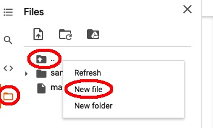

Forritið á að lesa inn \(a\), \(b\) og \(c\) með input-skipunum
(með viðeigandi beiðnum til notanda). Ef jafnan hefur tvær lausnir á forritið að
skrifa „Lausnirnar eru:“ og síðan lausnirnar, ef hún hefur eina lausn á að
skrifa hana með viðeigandi skýringu og ef engin lausn er skal skrifa skilaboð um
það. Lausn eða lausnir eru gefnar með formúlunni
\[x = \frac{-b \pm \sqrt{b^2 - 4ac}}{2a}\]
Ef stærðin undir kvaðratrótinni er neikvæð þá er engin lausn, ef hún er núll er
ein lausn, annars tvær. Gerið auk þess ráð fyrir þeim möguleika að \(a\) sé
0. Ef \(b\) er ekki líka 0 þá er jafnan fyrsta stigs og forritið á að skrifa
að svo sé, ásamt lausninni (sem er þá ein). Látið \(b\) og \(c\) vera
gefin með afmælisdegi ykkar (dagur og mánuður) og prófið forritið fyrir fjórar
mismunandi jöfnur, fyrsta stigs jöfnuna \(bx + c = 0\) og annars stigs
jöfnur sem hafa enga, eina og tvær lausnir þar á meðal jöfnuna \(x^2 + bx +
c = 0\). Setjið viðeigandi skjölunarstreng fremst í forritið.
Enn betri nálgun fæst með samsettri trapisureglu sem notar \(n\) trapisur.
Forritið hana og prófið með (*) og (**) og \(n = 4\). Kannið líka
hve stórt \(n\) þarf að vera til að fá (næstum) 7 rétta aukastafi, sbr.
uppgefin rétt gildi. Hér eru formúlurnar sem þarf að nota ásamt skýringarmynd:
Bilinu \([a,b]\) er skipt upp í \(n\) hlutbil sem hvert hefur lengd
\(\Delta x = \dfrac{b-a}{n}\).
Skiptipunktarnir eru:
\(a = x_0 < x_1 < x_2 < \cdots < x_n = b\)
þar sem \(x_i = a + i\Delta x\).
Skrifa skal forrit til að nálga heildi með svonefndri Simpsons-regla. Í trapisureglu er heildisbilinu skipt í \(n\) hlutbil, fallið sem heilda skal nálgað með beinum línustrikum og heildi þess nálgað með flatarmálinu undir þessum línustrikum. Í Simpsonsreglu er fallið hinsvegar nálgað (eða brúað eins og það er kallað) með parabólum og heildið nálgað með flatarmálinu undir þeim. Skoðið endilega Wikipedíu-grein um aðferðina.
þar sem \(\Delta x\) og \(x_i\) eru eins og í A-lið og \(n\) er
slétt tala.
Skrifið fall simpson(f,a,b,n) sem nálgar heildið af f frá a
til b með samsettri Simpsons-reglu með n hlutbilum.
Prófið með heildunum (*) og (**) úr A-lið með 4 hlutbilum. Ef rétt er forritað
ætti að fást \((*)\) 0.65933 og \((**)\) 1.71832. Kannið líka hve stórt \(n\) þarf að vera til að fá alla 7 aukastafina sem gefnir eru í töflunni í A-lið rétta. Heildið a‘ lokum eitthvert sjálfvalið fall þar sem afmælisdagur ykkar kemur við sögu.
Hitastig í Fahrenheitgáðum er \(T_F = \frac{9}{5}T_C + 32\) þar sem \(T_C\) er hitastigið í Celcíusgráðum. Skrifið forrit sem skrifar út töflu til að breyta milli skalanna sem nær frá \(–30^\text{o}C\) til \(50^\text{o}C\) og hleypur á \(5^\text{o}C\). Á Makka fæst gráðumerki með option-T og á Windows með Alt-0176. Taflan gæti byrjað svona:
°C °F
–––––––––
-30 -22
-25 -13
-20 -4
-15 5
...
B. Rætur, lograr, kvaðröt
Skrifið forritsbút með for-lykkju sem finnur kvaðratrætur, náttúrulega logra,
og önnur veldi talnanna 1–10. Notið F-strengi til að skrifa (fallega) töflu
yfir niðurstöðuna. Hafið 2 aukastafi í kvaðratrótunum og logrunum.
Endurtakið með while-lykkju.
C. Lograr og veldi
Til að reikna logra (lógaritma) hefur Python þrjú föll: Náttúrulegur logri fæst með log(x), tíu-logri fæst með log10(x) og loks fæst logri með grunntölu 2 með log2(x). Fastinn \(e\) fæst með math.e, og vísisfallið, \(e^x\), fæst með exp(x). Reiknið:
\(\ln(1)\)
\(\ln \exp(3)\)
\(\log_{10} 1000\)
\(\log_2 8\)
(Ætti að gefa 0, 3, 3 og 3)
D. Rúmmál kúlu
Þetta dæmi og það næsta (taflborðið) eru æfingar í útprentun, en ekki síður æfingar í að byggja upp forrit úr minni einingum, sem maður prófar hverja fyrir sig og setur svo saman.
Skrifið Python fall sem reiknar og skilar rúmmáli kúlu með radíus r. Prófið með kúlu með radíus 2 (ætti að skila 33.51)
Skrifið fall sem reiknar og skilar radíus hrings með gefið ummál. Prófið.
Skrifið fall sem tekur inn eðlismassa hlutar í \(\text{g/cm}^3\) og rúmmáli
hans í \(\text{m}^3\) og skilar þyngd hans í kg. Notið fallið til að reikna
þyngd gulltenings sem er 20 cm á kant (eðlismassi gulls er 19.30; ætti að
skila 154.4 kg).
Jörðin er um það bil kúla með ummál 40 þúsund km og eðlisþyngd hennar er 5.5 \(\text{g/cm}^3\). Notið föllin í liðum 1–3 til að finna massa jarðar í tonnum.
Látið öll forritin skrifa stuttan skýringartexta með því sem er prentað.
E. Taflborð
Lokamarkmiðið þessa dæmis er að búa til fall sem prentar út \(n \times n\) taflborð fyrir slétta tölu \(n\) sem lítur svona út þegar \(n=8\):
+-----------------+
| X X X X |
| X X X X |
| X X X X |
| X X X X |
| X X X X |
| X X X X |
| X X X X |
| X X X X |
+-----------------+
Það eru þrjár gerðir af línum:
Efsta og neðsta línan, með \(+\), \(2n + 1\) striki og aftur \(+\).
Línur eins og önnur línan með þrjú bil og X endurtekið \(n/2\) sinnum.
Línur eins og þriðja línan með X og þrjú bil endurtekið \(n/2\) sinnum
Skrifið þrjú föll, til að prenta línur af tagi a, b og c. Prófið hvert um sig fyrir \(n=2\) og \(n=8\).
Skrifið fall sem kallar á föllin í lið 1. og prentar \(n \times n\) borð. Látið fallið skrifa villuboð og hætta ef \(n\) er ekki slétt tala > 2. Prófið með \(n=8\)
Munið að nota *-virkjann, sem fjölfaldar strengi.
F. Viðsnúningur lista
Skrifið fall hali(L) sem skilar hala L, þ.e. lista með öllum stökum
nema því fremsta.
Skrifið fall hausaftast(L) sem skilar nýjum lista þar sem haus L hefur
verið færður aftast. Ef kallað er með L=[1,2,3,4] ætti fallið að
skila [2,3,4,1]. Prófið líka með lista búnum til útfrá afmælisdegi
(t.d. 3.8.1999 \(\to\)[3,8,99]).
Skrifið fall snúavið(L) sem snýr við lista. Hér er reiknirit:
Skrifið fall telja(s) sem byrjar á nota s.split() til að búa til
lista af einstökum orðum í s og telur síðan hve margir stafir eru í
hverju orði. Fallið á að skila lista með þessari talningu. Þannig ætti
telja("Afiminnogammamín")
að skila listanum [3,4,2,4,3]. Prófið líka að telja stafi í nafninu
ykkar (t.d. telja("KristjánJónasson")). Líklega borgar sig að búa
fyrst til tóman lista og fara svo í lykkju og bæta nýrri talningu afast
í listann í hverri umferð (t.d. með append).
Búið til fall hrópa(s) sem skrifar s út með stórum stöfum og tveimur
upphrópunarmerkjum. Hrópið svo nafnið ykkar :)
Til að athuga hvort stafur c sé hástafur má spyrja: c==c.upper().
Skrifið fall stórir(s) sem skilar lista af rökgildum með i-ta gildið satt
ef i-ta orðið í s byrjar á stórum staf. Prófið með sjálfvöldu dæmi og
sýnið niðurstöðuna.
Um útreikning kvaðratrótar er fjallað í kafla 7.5 í Think Python kennslubókinni.
Þar stendur að hægt sé að nota Newtons aðferð, og að ef byrjað er með einhverja
nálgun \(x\) við \(\sqrt{a}\) þá fáist betri nálgun, \(y\) með því
að reikna:
\[(*)\hspace{4cm} y = \frac{x + a/x}{2}\]
Formúluna má m.a. rökstyðja þannig að ef \(x\) er nákvæmt gildi þá er \(x^2 =
a\) svo að \(x = a/x\). Hinsvegar ef \(x\) er aðeins minna en
kvaðratrótin þá þá verður \(a/x\) aðeins stærra en hún (og öfugt) og því
ætti meðaltal \(x\) og \(a/x\) að vera betri nálgun. Svo má athuga hve
nálgunin er góð með því að skoða muninn á \(x\) og \(y\). Ef t.d.
\[(**)\hspace{4cm}|x - y| < \varepsilon\]
þar sem \(\varepsilon = 10^{-4}\) er hún orðin nokkuð góð.
Skrifið Python-fall, krót(a) sem útfærir þessa hugmynd. Byrjið með
upphafsgildið x=1 og finnið svo betri og betri lausn með því að nota
while-lykkju sem reiknar \((*)\) aftur og aftur og heldur áfram þangað
til \((**)\) er uppfyllt. Prófið að reikna \(\sqrt{9}\) og
\(\sqrt{10}\) (rétt gildi 3.16227766017).
Búið nú til nýja útgáfu af fallinu sem er með tvo inntaksstika, töluna a
og nákvæmnikröfu eps, og telur auk þess hve margar ítrekanir eru
teknar. Látið það skila bæði lokanálguninni og ítrekanafjöldanum (sbr. fyrra
sýnidæmið í kafla 4.7). Skrifið niðurstöður með hæfilegum
skýringartextum: lokanálgun, ítrekanafjölda, og muninn á réttri kvaðratrót
og lokanálgun. Prófið með nokkrum mismunandi gildum á \(a\) (m.a.
eitthvað mjög stórt gildi) og \(\varepsilon\), (m.a. gildi sem er ekkert
mjög lítið, t.d. 0.1 eða 0.01). Bætið við textareit og skrifið örfá orð um
niðurstöðu þessarar prófunar.
Hér er reiknirit sem raðar n-staka lista x með bóluröðun bubble sort, sem snýst um að rúlla í gegn um stökin og ef tvö samliggjandi stök eru í öfugri röð þá er víxlað á þeim. Þetta er endurtekið þar til öll stökin eru í röð. Minnstu stökin bobbla smám saman eins og loftbólur fremst í listann.
víxlað = satt
meðan víxlað
víxlað = ósatt
fyrir i=1,...,n-1:
ef x[i-1] > x[i] þá
víxla á x[i-1] og x[i]
víxlað = satt
Þýðið þetta reiknirit yfir í Python-fall bóluröðun(x). Athugið að til að víxla á breytum x og y má nota (x,y)=(y,x). Prófið með því að raða listanum [3,8,1,2,5,4].
Lesið aðeins um pólhnit
á Wikipediu áður en þið spreytið ykkur á eftirfarandi verkefni.
Skrifið fall pol2rec(r,theta) sem skilar pari (x,y), til að breyta úr
pólhnitum yfir í rétthyrnd hnit með eftirfarandi formúlum:
\[\begin{split}x &= r \cos{\theta}\\
y &= r \sin{\theta}\end{split}\]
Prófið að breyta \((r,\theta) = (4,35°)\) yfir í rétthyrnd hnit \(x\)
og \(y\) (á að gefa \(x=3.277\), \(y=2.294\)). Munið að nota
math.radians til að breyta gráðum í radíana.
Skrifið svo annað fall, rec2pol(x,y) sem skilar (r,theta) og breytir
í hina áttina með formúlunum:
\[\begin{split}\theta &= \operatorname{atan2}(y,x)\\
r &= \sqrt{x^2 + y^2}\end{split}\]
Prófið að breyta svarinu sem fékkst í lið 1 aftur til baka í pólhnit.
Athugasemd
Stærðfræðifallið atan2
sem er líka til í Python er sérhannað til að breyta úr rétthyrndum hnitum
í pólhnit. Það skilar horni \(\theta\) á bilinu \((-\pi,\pi]\)
þannig að \(\tan \theta = y/x\), nema ef \(x=0\), þá skilar fallið
\(\pm\pi/2\) með sama formerki og \(y\). Hornið er valið þannig að
það sé stefnuhorn vigursins \((x,y)\).
Ein einfaldasta röðunaraðferðin er innsetningarröðun (insertion sort).
Forritið fyrsta reikniritið í lýsingu hennar á Wikipediu í Python falli.
Notið paragildisgjöf, (x,y)=(y,x) til að víxla (swap) í 5. línu
reikniritsins. Prófið að raða listanum [3,8,1,2,5,4]. Leysið verkefnið með
falli sem hefur listann sem raða skal sem inntaksstika og skilar röðuðum
lista. Gætið þess að breyta ekki inntaksstikanum inni í fallinu.
Á vefsíðan pythontutor.com er hægt að keyra
forrit skref fyrir skref og skoða hvernig gildi á breytum breytast. Setjið
forritið sem þið skrifuðuð í lið 1 inn á þessa síðu og prófið ykkur áfram.
Eftirfarandi formúlu má nota til að nálga afleiðu falls í punkti \(a\):
\[f'(a) \approx \frac{f(a+h) - f(a-h)}{2h}\]
þar sem \(h\) er lítil tala. Skrifið fall töldiff(f,a,h) sem
reiknar slíka nálgun og skilar henni. Prófið með \(f(x) = \sqrt{x}\),
\(a = 4\) og \(h = 10^{-4}\) (sem ætti að skila tölu sem er nálægt
\(\frac{1}{2\sqrt{4}}\)).
Skrifið nú töflu yfir nálgunina fyrir \(h = 10^{-k}, k=1,...10,\) og
látið fylgja með dálk sem sýnir hve skekkjan er mikil. Merkið með \(*\)
línuna þar sem skekkjan er minnst.
Hugsum okkur að ísl_ens sé uppflettitafla sem geymir íslensk-enska orðabók.
Hún gæti t.d. innihaldið pörin:
"reipi"\(\to\)"rope" "hús"\(\to\)"house" og "rauður"\(\to\)"red".
Ef við vilum búa til ensk-íslenska orðabók gætum við snúið töflunni við og
fengið pörin "rope"\(\to\)"reipi", "house"\(\to\)"hús" o.s.frv.
Skrifið fall snúavið(U) sem snýr uppflettitöflu við á þennan hátt og
skilar viðsnúnu töflunni. Gerið ráð fyrir að taflan U hafi hvergi sama
gildi fyrir tvo mismunandi lykla. Prófið með orðaskránni að framan og búið
til ens_ísl.
Skrifið nýja útgáfu af fallinu, snúavið2(U), sem er ekki með slíkri
einkvæmnitakmörkun. Það á að skila nýrri uppflettitöflu V sem er þannig
að ef g er gildi svarandi til tveggja mismunandi lykla, U[x]=U[y]=g þá á gildi V fyrir lykilinn g að vera listi með x og y,
V[g]=[x,y]. Bætið nú tveimur pörum við ísl_ens:
Árið 1959 kom út grein
eftir Donald L Shell með hraðvirku reikniriti til að raða \(N\) tölum (eða
öðrum hlutum) sem síðar var kallað Shell-sort. Það er áhugavert að skoða
greinina, sérstaklega hvernig reikniritið er sett fram með svonefndu
flæðiriti, en í byrjun tölvualdar voru þau algeng. Reikniritið vinnur með
minnkandi runu af bilum (gaps), \(b_1 > b_2 >...> b_n = 1\). Í fyrstu
umferð er sætum \(0, b_1, 2b_1,\ldots\) raðað með innsetningarröðun (sjá
verkefni 9), þvínæst sætum
\(1, 1+b_1, 1+2b_1,\ldots\), o.s.frv. þar til allar hlutrunur sæta með
millibili \(b_1\) eru komnar í röð. Þetta er svo endurtekið fyrir öll bilin.
Í upphaflegu grein Shells var \(b_k\) valið sem \(\left\lfloor N/2^k
\right\rfloor\) en síðan hafa menn þróað ýmsar aðrar bilarunur
(\(\left\lfloor x \right\rfloor = \operatorname{int}(x)\); þ.e. sker
aukastafi af \(x\)).
Hér er reiknirit sem Shell-raðar lista a[0],a[1]...a[N-1] með upphaflegu bilarununni:
fyrir k = 1,2,3,...:
bil = int(N/2^k)
ef bil < 1 þá út úr lykkju
fyrir i = 0, 1,..., bil-1:
raða a[i], a[i+bil], a[i+2*bil],... með innsetningarröðun
Skrifið Python-fall sem Shell-raðar. Byrjið á að leysa verkefni
9 ef þið eruð ekki þegar búin að því. Það er
hægt að nota heiltöludeilingu (//) til að reikna bil og hlutrunan í
neðstu línunni fæst með a[i:N:bil]. Byggið á reikniritinu að framan (og alls
ekki ná í tilbúið forrit af netinu). Prófið að raða listunum [8,3,2] og
[8,5,1,9,6,2,1,7,11,3], og auk þess einum sjálfvöldum lista með 12 tveggja
stafa tölum.
Þetta verkefni er lauslega byggt á verkefnum í 9. kafla Think Python kennslubókarinnar. Í skrá með
veffang https://cs.hi.is/python/ord.txt eru
217 þúsund íslensk orð. Þið getið skoðað skrána með því að smella á hlekkinn. Í
verkefninu sem hér fylgir þarf að nota ýmsar strengjaaðgerðir sem lýst er í
kafla 5.2.
Opnið skrána með urlopen og lesið hana inn eins og sýnt er í kafla
8.2.4. Prentið út fyrstu 5 orðin og líka
tíu þúsundasta hvert orð og öll orð sem eru lengri en 30 stafir.
Leiðbeining
Það er bara eitt orð á hverri línu sem hægt er að ná í með orð=lína.decode().strip()
Athugasemd
Í stað þess að nota urllib mætti lesa skrána inn með NumPy eins og fjallað
er um í kafla 10.6.3. Þá er notað
dtype=str í sjálfum innlestrinum, og síðan má nota tolist-aðferðina til
að breyta innlesnum vigri í venjulegan lista af strengjum.
Spegilorð (palindrome) er orð sem er eins lesið afturábak og áfram (t.d.
kajak). Skrifið rökfall spegilorð(s) sem kannar hvort s sé spegilorð
[rökfall er fall sem skilar True eða False og prófið. Skrifið í
framhaldi út öll spegilorð í skránni, 10 á hverja línu. Fyrsta linan ætti að
verða:
abba,afa,aga,agga,aka,ala,alla,ama,amma,ana,
Leiðbeining
Til að snúa við streng s má nota s[::-1]. Það þarf
að nota end= í print-skipun sbr. kafla 4.4, og svo þarf
að nota teljara sem fylgist með hvað er búið að prenta mörg orð á línuna og
þegar þau eru orðin 10 er farið í nýja línu með print() og teljarinn
núllstilltur. Fyrsta línan sem prentast ætti að vera:
Finnið þau orð í skránni sem hafa einn sérhljóða og hámarksfjölda samhljóða.
Athugasemd
UTF-8 er staðall til að geyma
bókstafi og önnur rittákn í tölvum. Staðallinn hefur á síðasta áratug eða svo
orðið alsráðandi í tölvuheiminum, og eru 97% allra vefsíðna skráð með honum.
Hver stafur er geymdur í einu til fjórum bætum. Algengustu tákn og stafir,
þ.m.t. allir enskir bókstafir nota eitt bæti, aðrir bókstafir allra evrópskra
tungumála þurfa tvö bæti, en sjaldgæfari stafir og tákn þurfa þrjú
eða fjögur bæti. Strengir í forritunarmálum, þ.m.t. Python eru hinsvegar ekki
geymdir með
UTF-8 sniði heldur ýmist sem Latin-1, UTF-16 eða UTF-32. Þetta er gert
til að öll tákn hvers strengs séu jafn mörg bæti, sem flýtir t.d. fyrir
uppflettingu á i-ta sæti.
Í þessu verkefni á að búa til töflu yfir hlutfallslega tíðni hvers stafs í
skránni ord.txt úr verkefni 13, og
jafnframt hvað sú tíðni samsvarar mörgum heilum stöfum af 98, sem er
heildarfjöldi stafa í pokanum sem notaður er í borðspilinu skrafli
(scrabble). Taflan ætti að byrja svona:
stafur tíðni fjöldi
–––––––––––––––––––––
a 9.80% 10
á 1.27% 1
b 1.34% 1
Leiðbeiningar
Byrjið á að skoða athugasemdina að neðan, þ.m.t. vefsíðu netskraflara.
Skrána ord.txt má opna og lesa inn annaðhvort með urllib eða NumPy,
eins og í verkefni 13 . Ef s er
strengur og L er listi af strengjum þá má skeyta þeim saman aðskildum
með s með því að rita s.join(L), til dæmis:
L=["már","mús","mý"]s1=",".join(L)# gefur "már,mús,mýs2="".join(L)# gefur "mármúsmý"
Þannig má fá langan streng öllorð með öllum orðum skrárinnar í runu
með því beita join með tóma strengnum á útkomuna úr allarlínur.
Skoðið byrjunina á öllorð með print(öllorð[:40]). Svo má t.d. finna
hlutfallslega tíðni a með ta=öllorð.count("a")/n þar sem n=len(öllorð). Tilsvarandi heill fjöldi a-a af 98 fengist með
round(ta*98). Hægt er að rúlla í gegn um alla stafina með for-lykkju
og strengnum:
stafróf="aábcdðeéfghiíjklmnoópqrstuúvwxyýzþæö"
Aukaspurning: Ef rétt er reiknað sést að allmargir stafir gefa fjöldann
0. Í skrafli er hinsvegar amk. einn stafur af hverri gerð í pokanum. Ef við
hækkum öll núllin upp í einn fást of margir stafir. Lýsum einni leið til að
leiðrétta það. Byrjum á að búa til uppflettitöflu fj þannig að fj[c]
sé fjöldi af staf c skv. lið 1, nema við látum fj[c]=max(1,round(ta*98)).
Hér er tilvalið að nota yfirgrip. Við látum:
Nú má fara aftur í gegn um lykkju eins og í lið 1, nema hvað aðeins er rúllað
í gegn um stafina í eftir, í stað 98 kemur N, og svo þarf n að vera fjöldi
stafa í skránni sem eru í eftir. Aftur er hægt að nota yfirgrip:
n=sum([öllorð.count(c)forcineftir]).
Útfærið þessa hugmynd og athugið hver heildarfjöldi stafa verður.
Athugasemd: Um skrafl
Í skrafli eru mismargir stafir af hverri gerð í pokanum eins og skoða má á
vefsíðu netskraflara: það eru t.d. ellefu a,
og átta r, en ekki nema tvö ó og eitt h. Stafirnar gefa líka mismunandi mörg
stig. Fjöldi eintaka af hverjum staf er nokkurnveginn í hlutfalli við tíðni
stafanna í íslenskum orðalista svipuðum þeim sem er í skránni ord.txt, og
gildi hvers stafs er líka tengt þessari tíðni.
Skrá lesin. Skrifið forrit sem les einkunnaskrána inn í uppflettitöflu
(dictionary) eink_tafla þannig að eink_tafla[nr] gefi einkunn
próftaka með prófnúmer nr sbr. dæmin í kafla 8.2.5. Prófið (t.d. með því að sýna úttakið sem skipunin
print(eink_tafla) skilar).
Prófnúmerið er sem sé aðskilið frá nafninu með tveimur bilum og svo er nafnið
ýmist með millinafni eða án. Til að höndla þetta er hægt að nota split
með viðbótarviðfangi sem tilgreinir hve oft á að skipta. Ef lína er
fyrsta línan í skránni mundi
(nr,nafn)=lína.decode().strip().split(maxsplit=1)
skipta strengnum rétt í tvo hluta, númer og nafn (strip() þarf að vera
með hér til að losna við línuskiptatákn). Notið þetta trix til að lesa
nafnaskrána inn í uppflettitöflu nafn_tafla sem nota má til að fletta upp
á nafni útfrá prófnúmeri. Prófið með sama hætti og fyrr.
Úskrift lista. Skrifið forrit sem rennir í gegn um prófnúmerin í
eink_tafla, flettir upp nafni hvers nemanda í nafn_tafla, og skrifar
allt þrennt: prófnúmer, einkunn, og nafn í snyrtilegri töflu með fyrirsögnum
og dálkum sem standast á.
Hæsta einkunn. Skrifið loks forrit sem ákvarðar hver fékk hæstu
einkunnina og skrifar nafn hans/hennar ásamt einkunninni (gera má ráð fyrir
að það sé bara einn). Notið lykkju og uppfærið inni í lykkjunni, í hvert sinn
sem einkunn er hærri en sú hæsta sem sést hefur, bæði hæstu einkunnina og
nafn þess sem hana fékk. Forritið ætti að skrifa: Íris María Birgisdóttir
var hæst með 10.0).
Athugasemd: Lausn með NumPy
Forritin í liðum 1 og 2 má líka útfæra með NumPy; liður 1 er einfaldur:
dálkar skrárinnar eru lesnir inn með np.loadtxt (sbr. kafla
10.6) og svo er uppflettitaflan búin til með
dict(zip(...)), eins og í seinna sýnidæminu í 8.2.5. Aftur er nafnaskráin erfiðari. Einn möguleiki er að lesa
hana inn með L=np.loadtxt(...,dtype=str,delimiter=','). Af því að
það eru engar kommur í skránni skilar þetta lista með línum skrárinnar.
Svo mætti ná í númerin með yfirgripi (comprehension) svona:
nr=[l.split(maxsplit=1)[0]forlinL]
og nöfnin með samskonar hætti þar sem [1] kemur í stað [0]
Athugasemd: Lausn með Pandas
Það er líka hægt nota Pandas í liðum 1 og 2. Skrárnar má lesa með
pd.read_fwf (sjá töflu 15.3). Með því falli
leysist flækjan í innlestrinum í lið 2 eiginlega sjálfkrafa því Pandas skoðar
skrána og finnur sjálfkrafa út hvernig á að skipta hverri línu í númer og
nafn. Athugið að nota þarf bæði names=... og dtype=str. Svo er hægt
að nota dict(zip(...)) eins og með NumPy, og zippinu má beita beint á
Pandas-dálkana eins og nefnt er í kafla 15.4.
Útprentun úrslita. Í skránni https://cs.hi.is/python/kosningar-2021.txt eru úrslit nýjustu
Alþingiskosninga (eftir endurtalningu í NV-kjördæmi). Lesið skrána,
annaðhvort með hjálp urlopen (sbr. kafla 8.2.4 og 9.3.2) eða með NumPy, og skrifið
niðurstöðuna með eftirfarandi sniði:
Flokkur Atkvæði Hlutfall Þingsæti
–––––––––––––––––––––––––––––––––
B 34501 17.3% 13
C 16628 8.3% 5
...
Athugið að það þarf að lesa alla töfluna inn í lista fyrst svo hægt sé að
reikna heildarfjölda atkvæða til að geta reiknað hlutfall hvers flokks.
Aukamenn. Það eru nokkuð flóknar reglur notaðar til að finna
þingsætafjöldan og ekki víst að alltaf komi sanngjörn niðurstaða. Til að
skoða það mætti reikna svonefnda sætishluti, eða þingsætin sem brot, og
sleppa þeim flokkum sem ekki komu manni inn (til þess þarf að fá 5%
heildaratkvæða, og J, O og Y náðu því ekki). Það eru alls 63 þingsæti, og ef
\(A\) er heildaratkvæðafjöldi þeirra flokka sem komu inn manni og
\(a_i\) eru atkvæði flokks \(i\) þá er sætishlutur hans
\[s_i = 63 \frac{a_i}{A}\]
Búið til forrit til að skrifa út töflu eins og í lið 1, en bara með þeim 8
flokkum sem komu manni að, og með viðbótardálki með sætishlutunum.
Bætið svo við textareit og segið örfá orð um það hvort niðurstaðan hafi verið
sanngjörn eða hvort einhver flokkur (eða flokkar) hafi grætt (fengið
aukamann), og þá á kostnað hverra.
Tafla með flokkanöfnum. Í skránni https://cs.hi.is/python/flokksnofn.txt eru listabókstafir í fyrsta dálki og
þar fyrir aftan eru nöfn flokkanna, sem geta verið tvö eða fleiri orð. Lesið
þessa töflu inn í uppflettitöflu eins og gert er í verkefni
15b. Reyndar er skráin með tab-táknum
á eftir listabókstöfumum sem auðveldar aðeins NumPy innlestur, því hægt er að
tilgreina delimiter="\t" til að aðgreina listabókstafi og flokksnöfn,
t.d.
Skrifið svo út töflu eins og gert var í lið 1, en með nýjum dálki með nöfnum
flokkanna, sem flett er upp í uppflettitöflunni.
Athugið að allar töflurnar sem þið prentið út þurfa að vera snyrtilegar, með
fyrirsögnum, hæfilegum aukastafafjölda í tölum, vinstri-jöfnuðum textadálkum
og hægri-jöfnuðum talnadálkum.
Í kafla 8.3.6 var skoðað hvernig hægt er að lesa dálk úr
CSV-skrá og hér æfum við okkur í því, og líka hvernig búa má til skrár.

Ný textaskrá í Colab. Það er hægt að búa til skrá í content möppunni í
Colab með því að smella á möppu- táknið á vinstri spássíu, hægri-smella svo á
möppuna með upp-örinni og velja svo New file sbr. myndina hér t.h.
Síðan má opna skrána með því að tvísmella á hana og svo má slá gögn inn í
hana. Með því að smella á nafn skrárinnar efst í hægri spássíu vistast
breytingar. Notið þessa aðferð til að búa til skrá malmar.txt með
innihaldinu sem er sýnt í kafla 8.3.4 (og líka hér).
Náð í dálk. Hér á að ná í lista með eðlisþyngdum. Búið til lesara fyrir
málma-skrána eins og gert er í kafla 8.3.4, en
breytið honum svo í lista í staðinn fyrir að nota hann í for-lykkju, eins og
útskýrt er í kafla 8.3.6. Náið loks í eðlisþyngdirnar úr
dálki 1 sem kommutölur eins og líka er útskýrt í þeim kafla.
Skrá hlaðið niður og upp. Prófið að lokum að hlaða skránni niður frá
Colab-skýinu, breyta henni með ritli á eigin tölvu og hlaða henni aftur upp.
Búið til vandaða teikningu af fallinu á bilinu \([-3.4, 3.4]\) sbr. kafla
9.6. Notið
linspace fallið og stikana/föllin xlim, ylim, xticks,
yticks, linewidth, color, axvline, axhline, grid,
box og tick_params með hæfilegum viðföngum.
Í þessu verkefni ráðið þið hvort þið lesið gögnin með aðstoð urlopen (sjá
kafla 8.2.4 og 9.3.2), csv-lesara (sjá 8.3.6) eða NumPy (sjá 10.6).
Veðurskrá lesin. Í skránni cs.hi.is/python/hiti-urkoma.txt eru gögn um meðalárshita og úrkomu í
Stykkishólmi 1949–2018. Lesið gögnin í skrána inn í þrjá lista og prentið út
upplýsingar fyrir fyrstu 5 og síðustu 5 árin (x[-5:] gefur öftustu 5 stök í x).
Meðalhiti og köld ár. Notið föllin í köflum 6.3 og 6.4 til að
finna:
meðalhita allra áranna (summa deilt með fjölda)
kaldasta árið og meðalhita þess (notið min til að finna hitann og
R.index til að finna árið)
hve mörg ár voru með meðalhita undir 3°C (hér má nota yfirgrip
(comprehension) sem býr til lista af rökgildum og svo R.count() en
það má líka nota einhverja aðra aðferð).
Línurit af hita. Teiknið línurit af hitanum með ártal á x-ás ásamt 11 ára hlaupandi
þríhyrningsmeðaltali sem lítur svona út eða því sem næst:
Hér er fall til að reikna svoleiðis hlaupandi meðaltal (ef d er sleppt í
kallinu fær það sjálfgefið gildi 5, sem gefur 11 ár).
defhlaupmeðal(x,d=5):"""skilar lista með hlaupandi (2d+1)-sæta þríhyrn ingsmeðaltali"""n=len(x)hm=[0]*nforiinrange(n):m=max(0,i-d)M=min(n,i+d+1)w=[d-abs(k-i)forkinrange(m,M)]hm[i]=sum([x[m+j]*w[j]forjinrange(M-m)])/sum(w)returnhm
Súlurit af úrkomu Teiknið súlurit af úrkomunni sem lítur nokkurnvegin
svona út (myndin er 5x2 tommur og liturinn heitir ‚chocolate‘ en þið megið
velja lit að vild):
Punktarit af úrkomu og hita. Teiknið að lokum punktarit (scatter plot)
af úrkomu og hita. Byrjið á að fá mynd eins og þá sem er vinstra megin að neðan.
Búið svo til til mynd eins og þá sem er hægra megin með því að láta c-stika í
scatter vera lista með ártölum. Kallið loks á plt.colorbar(label="ár")
(notið samt ykkar nafn á ártalalistanum) og þá birtist litaskalinn sjálfkrafa.
Túlkun niðurstaðna. Búið til textareit og skrifið nokkrar línur um það hvað
lesa má út úr myndunum. Bætið gjarna við viðbótarupplýsingum sem fást með
útreikningum í Python (t.d. meðalhiti á tilteknum köldum/hlýjum tímabilum,
staðalfrávik einhverra valdra stærða, fylgni milli hita og úrkomu).
Bæði sort-fallið og sorted-aðferðin sem útskýrð eru köflum
6.1 og 6.5 geta raðað lista af strengjum í
enskri stafrófsröð, en því miður lenda séríslenskir stafir ekki á réttum stað í
röðinni. Séríslensku stafirnir eru aftast og ekki í réttri röð. Til að laga
þetta þarf dálítið stúss. Bæði föllin geta tekið viðbótarviðfang, key sem er
fall til að breyta röðinni. Einfalt dæmi er að rita:
L.sort(key=str.lower)
til að raða lista af af strengjum í enska stafrófsröð óháð því hvort þeir hafa
lágstafi eða hástafi. Hér er slíkt fall fyrir íslenska stafrófsröð (sem KJ tókst
að böggla saman í allmörgum tilraunum). Áhugasamir geta ef þeir vilja stúderað
það og e.t.v. lært eitthvað af því (notkunin íslenska.a er kölluð „function
attribute“)
defíslenska(s):"""notað sem 'key' í sort eða sorted til að raða í íslenska stafrófsröð, t.d. print(sorted(['ár','bára','bali','akur'], key=íslenska))"""return[íslenska.k.get(c.lower(),0)forcins]returntíslenska.a=list('0123456789aábcdðeéfghiíjklmnoópqrstuúvwxyýzþæö')íslenska.k=dict(zip(íslenska.a,range(1,len(íslenska.a)+1)))
Notið sort eða sorted til að raða listanum ["Ýmir","Una","Ása","Örn","Þór","Már","Mist"], fyrst án þess að nota key (það
kemur bandvitlaus röð) og svo með key.
Í skránni https://cs.hi.is/python/kennitolur.txt eru skáldaðar upplýsingar um 15
próftaka, nöfn, prófnúmer og kennitölur, aðskildar með kommum. Lesið skránna
inn í þrjá lista annaðhvort með csv-pakkanum (sjá kafla 8.3.2) eða með NumPy. Raðið svo nöfnunum í íslenska stafrófsröð
og prentið út, eitt á hverja línu.
Til að fá tilsvarandi prófnúmer og kennitölu aftan við hvert nafn er t.d.
hægt að nota uppflettitöflur. Ef L1 og L2 eru jafnlangir listar þá gefur:
tafla=dict(zip(L1,L2))
töflu frá L1 til L2 (sbr. sýnidæmi aftast í kafla 8.2).
Búið til slíka uppflettitöflu frá nöfnum yfir í prófnúmer og aðra yfir í
kennitölur og skrifið út nýja töflu með þessum upplýsingum, með fyrirsögnum
og snyrtilega upp setta.
Teiknið mynd af fallinu \(f(x) = \sin x + \sin 2x - 2 \sin 3x\) á bilinu
\([-\pi, 3\pi]\), sbr. dæmi V17. Hér er dæmi um slíka mynd með ýmsum
fídusum, en ekki er farið fram á að þeir séu allir notaðir.
[til að láta ásamerkingarnar koma við ásana sjálfa notaði ég gúgltöfrabrögð:
forsin['left','bottom']:plt.gca().spines[s].set_position('zero')]
Í lotukerfinu hefur hvert frumefni sætistölu (atomic number), lotu
(period) og flokk (group). Sætistalan gefur fjölda rafeinda
(electrons) eða róteinda (protons) í óhlöðnu atómi, lotan segir til um hve
mörg hvel (atomic orbitals) af rafeindum óhlaðið atóm hefur, en flokkurinn
gefur til kynna fjölda rafeinda á ytri hvelum. Fyrir utan helíum eru \(F\)
rafeindir á ysta hveli í atómum í flokki \(F\) fyrir \(F = 1, 2\) og
\(F - 10\) rafeindir eru þar ef \(11 \leq F \leq 18\). Í flokkum 3–10 er
fjöldinn 1–2, oftast 2.
Ysta hvel telst fullskipað ef þar eru 8 rafeindir (2 fyrir helíum). Ef þær eru 1–3
myndar atómið gjarna jákvæða jón, t.d. \(\text{Na}^+\), \(\text{Ca}^{2+}\) eða
\(\text{Al}^{3+}\), og ef þær eru 5–7 verður jónin neikvæð, t.d. \(\text{Cl}^–\) eða
\(\text{N}^{3–}\). Frumefni með fullskipað ysta hvel, helíum, neon, argon o.s.frv.
nefnast eðallofttegundir (noble gases).
Sætistölur eðallofttegunda Hægt er að reikna sætistölu eðallofttegundar nr. \(k\),
\(s_k\), með eftirfarandi formúlu:
\[\begin{split}s_k = \dfrac{(k+1)(k+2)(k+3)}{6} +
\begin{cases}
-2 &\text{ ef }k\text{ er oddatala}\\
\dfrac{k}{2}-1 &\text{ ef }k\text{ er slétt}
\end{cases}\end{split}\]
Skrifið fall sem reiknar skv. þessari formúlu og prófið það fyrir
\(k=1,2,...,7\). Ath. að allar deilingar ganga upp svo gott er að nota
// virkjan svo útkoman verði af heiltölutagi.
Lotur og flokkar Hægt er að ákvarða lotu frumefnis með því að skoða hvar sætistala
þess lendir á milli eðallofttegunda. Ef \(s\) er sætistalan og
\[s_{k-1} < s \leq s_k\]
þá er frumefnið í lotu \(k\). Flokkurinn fæst svo með:
\[\begin{split}F =
\begin{cases}
1 &\text{ef }s = 1\\
s - s_{k-1} &\text{ef }1 < s \leq s_{k-1} + 2\\
\max(3, 18 + s - s_k) &\text{annars}
\end{cases}\end{split}\]
Skrifið föll lota(s) og flokkur(s) sem ákvarða lotu og flokk
frumefnis með sætistölu \(s\). Prófið með a.m.k. fjórum frumefnum, þar á
meðal einhverjum af sjaldgæfu jarðmálmunum, sem hafa sætistölur á bilinu
57–71 og eru í lotu 6 og flokki 3 skv. lotukerfinu á mynd
23.1. Leiðbeining: Lotuna má finna með while-lykkju og
fallinu úr lið 1. Til að finna flokkinn er gott að nota if–elif–else.
Mynd 23.2: Gull og kvikasilfur. Mynd úr bókinni „Efnið“ sem kom út í bókaflokknum
„Alfræðasafn AB“ árið 1968.
Íslensk og ensk málmanöfn. Með NumPy skipununum í kafla
10.6.4 má lesa skrána
https://cs.hi.is/python/allir-malmar.txt inn í vigra efnatákn, nafn,
sætistala, eðlisþyngd, bræðslumark og enskt_nafn. Gerið það og búið í
framhaldi til uppflettitöflu milli nafnanna með aðstoð dict og zip
eins og gert er í sýnidæminu aftast í kafla 8.2 og í
verkefni 21c. Náið líka í fallið
íslenska úr sama verkefni og notið töfluna og þetta fall til að prenta út
orðalista með íslenskum málmanöfnum í stafrófsröð ásamt enskum þýðingum.
Eðlisþyngd eftir sæti. Teiknið punktarit af sætistölu og eðlisþyngd sem
er litað með lotu í lotukerfinu (sbr. verkefni 19 –
ath. að Matplotlib getur teiknað hvort sem er lista af tölum eða NumPy
vigra). Munið að bæta colorbar við myndirnar.
Fleiri myndir?? Ef tími vinnst til má t.d. teikna samskonar mynd af sætistölu
og bræðslumarki.
Í kafla 9.3.2 var gefið sýnidæmi um einfalda
teikningu súlurits af kosningaúrslitum 2021. Þar voru gögnin lesin með aðstoð
urlopen, en í þessu verkefni verða þau lesin með NumPy og jafnframt búið
til fínna súlurit þar sem:
• súlurnar eru litaðar í flokkslitum
• nöfn flokkanna koma neðan við hverja súlu
• atkvæði eru sýnd í prósentum
• þingsætafjöldi er skrifaður ofan við hverja súlu
• ýmis önnur atriði eru lagfærð
Hér er mynd af súluritinu sem stefnt er að:
Úrslit kosninganna eru í skránni https://cs.hi.is/python/kosningar-2021.txt. Það eru þrír dálkar, með
listabókstaf, atkvæðatölu og þingsætafjölda fyrir hvert framboð. Skrána er
hægt að lesa með numpy.loadtxt eins og lýst er í kafla
10.6.3. Skrifið fall lesaúrslit() sem les
þessa skrá og skilar þremur listum, listi, atkvæði og þingsæti með
innihaldinu. Prófið.
Flokkslitina má finna á Wikipedíu sem HEX-strengi, en
það er í lagi því Matplotlib skilur það. Litirnir hafa verið lagaðir
lítilsháttar og settir ásamt flokksnöfnum í skrána
https://cs.hi.is/python/flokkslitir.txt. Þar sem flokksnöfnin innihalda bil
eru dálkarnir afmarkaðir með kommum. Skráin er sem sé CSV-skrá og hana má
lesa eins og útskýrt er í kafla 10.6.4.
Skrifa skal fall lesalitinöfn sem les skrána og skilar þremur
strengjalistum, stafur, litur og nafn með innihaldinu. Það er
eitt smá-vesen: Litirnir byrja á # sem NumPy tekur sem comment. Til að
það gerist ekki þarf að kalla á loadtxt með
A=np.loadtxt(skrá,...,comments=None).T
Takið eftir að við notum annað breytunafn fyrir listabókstafina en í lið 1 svo
þau ruglist ekki saman. Prófið.
Uppflettitöflur. Í kafla 8.2.5 (og í
verkefni 21) er sýnt hvernig auðvelt
er að búa til uppflettitöflur úr listum. Hér á að nota tvær töflur til að
fletta upp lit og nafni sem svara til listabókstafs:
Skrifið fall sem býr til þessar töflur og skilar svo tveimur listum þar sem búið
er að fletta upp í þeim. Kallið á fallið á að vera:
(litir,nöfn)=litirognöfn(listi,stafur,litur,nafn)
Þegar búið er að búa til litatöfluna má nota yfirgrip (comprehension) til að
búa til litalistann:
litir=[litatafla[st]forstinlisti]
og eins fyrir nöfnin. Prófið.
[Athugið að það eru 11 stök í vigrunum með kosningaúrslitunum, en 14 í
vigrunum sem koma úr lið 2. Hins vegar verða vigrarnir litir og nöfn
bara með 11 stökum, því við flettum bara upp á stöfunum í listi sem hefur
lengd 11.]
Einfalt súlurit. Nú er auðvelt að búa til fyrstu útgáfu litaða súluritsins.
Náð er í nauðsynleg gögn með því kalla á föllin sem búin voru til í liðum
1–3. Svo er fjöldi súlna og staðsetning þeirra á x-ás fundin með n=len(listi) og x=range(n). Þá má teikna með:
plt.bar(x,atkvæði,color=litir)
Fullgert súlurit. Nú á smám saman að bæta atriðum við súluritið til að
fullgera það. Stækkið myndina með því að nota dpi í plt.figure.
Atkvæðahlutfallið er auðvelt að reikna í NumPy með því að deila summu atkvæða
upp í atkvæðavigurinn: hlutfall=atkvæði/sum(atkvæði) og nota svo
hlutfall í staðinn fyrir atkvæði í plt.bar-skipuninni. Til að fá það sem
prósentur má kalla á eftirfarandi (töfra)fall.
defprósentuformat(ás):"""merkir ás ("x" eða "y") með prósentum"""frommatplotlib.tickerimportFuncFormatterásar=plt.gca()# get current axesxy=ásar.xaxisifás=="x"elseásar.yaxisxy.set_major_formatter(FuncFormatter('{0:.0%}'.format))
Flokkanöfnin eru sett neðan við hverja súlu með xticks-skipun eins og í
sýnidæminu í kafla 9.3.2, en hinsvegar þarf
að skrifa þau lóðrétt, og það er gert með viðfangi rotation, nánar
tiltekið:
plt.xticks(x,nöfn,rotation="vertical")
Þá er eftir að skrifa inn þingsætin. Til þess er notuð skipunin text,
sbr. töflu 9.2 og líka fyrra sýnidæmið í
kafla 9.3.2. Við förum í lykkju yfir
x-hnitin í vigrunum og skrifum hvern þinsætafjölda ofan við sína súlu, t.d. í
13 punkta letri. Vigurinn hlutfall gefur y-hnit fyrir textana.
Þá er bara eftir síðsta töttsið. Stækkum y-ás með plt.ylim(...), bætum
við titli, skýringu við y-ás, láréttum netlínum með plt.grid(axis="y").
Mestu snyrtipinnarnir losa sig að lokum við tick-merkin með
plt.tick_params(length=0).
Oft er línulegt samband á milli gagna, þannig að breytur stækka samhliða, en þó með ákveðinni skekkju, sbr. myndina hér til hliðar.
Með aðferð minnstu kvaðrata (linear least squares method) er fundin
jafna bestu línu með því að lágmarka kvaðratsummu fjarlægða milli línunnar
og gefins punktasafns, eins og lesa má um á Wikipedíu. Það er líka hægt
að finna jöfnu bestu parabólu eins og sýnt er aðeins aftar í sömu
Wikipedíugrein.
skila stuðlum í jöfnu bestu línu og jöfnu bestu parabólu fyrir punktasafnið \((u_0, v_0), (u_1, v_1)\ldots\), þannig að jöfnur línunnar og parabólunnar eru:
\[\begin{split}y &= a x + b \\
y &= A x^2 + B x + C\end{split}\]
Til að teikna línuna eða parabóluna er hægt að nota aðferðir kafla 9.6, en reyndar er hægt að einfalda málið með því að notfæra sér numpy reikninga. Til teikna línuna á bilinu \([x_\text{min}, x_\text{max}]\) má t.d. nota:
Reyndar þyrfti ekki nema tvo punkta á línunni, til dæmis xp=np.linspace(xmin,ymin,2) (eða xp=np.array([xmin,ymin])), en parabólan þarf fleiri punkta.
Skoðið framangreinda Wikipedugrein.
Í verkefni 19e voru teiknaðar myndir af
meðalárshita og ársúrkomu í Stykkishólmi 1949–2018. Gögnin eru í skránni
cs.hi.is/python/hiti-urkoma.txt
og þau má lesa inn í þrjá vigra með:
Gerið það og ákvarðið jöfnu bestu línu fyrir hita á x-ás og úrkomu á y-ás.
Teiknið bæði gögn og línu inn á sömu mynd. Látið myndina hafa stærð (12,6).
Teiknið nú punktarit af ári og ársmeðalhita, og teiknið inn á hana bæði bestu
línu og bestu parabólu. Setjið inn hæfilegar merkingar, m.a. ramma með
legend-skýringum.
Skráin cs.hi.is/python/karfa.txt inniheldur þrjá
dálka með aldri hæð og þyngd 1064 bandarískra körfuboltamanna. Notið
np.loadtxt til að lesa skrána inn í þrjá vigra t.d. aldur, hæð og
þyngd eða a, h og þ. Eftirfarandi teikningar þarf að gera sæmilega
snyrtilega, m.a. merkja ása og setja inn titla og passa að þær séu mátulega
stórar. Þeir sem vilja mega setja einhverjar teikningar hlið við hlið með því að
nota plt.subplot, sbr. einfalda lýsingu hér.
Teiknið þrjú (einföld) súlurit af aldri, hæð og þyngd.
Teiknið punktarit með hæð á x-ás og þyngd á y-ás. Finnið svo og teiknið jöfnu
bestu línu inn á myndina (sbr. verkefni 25)
Miðtölu (median) vigurs x má finna með np.median(x) (helmingur staka
x er minni en miðtalan og helmingur stærri). Hver er miðtala aldurs
körfuboltamannanna. Notið miðtöluna til að skipta gögnunum í tvennt (með
rökvísun), yngri og eldri. Finnið meðalhæð þeirra yngri og þeirra eldri.
Hér er dæmi úr gömlu kínversku handriti frá því á fyrstu öld f.Kr. Leysið það með NumPy:
Nokkrir ætla að leggja í púkk til að kaupa hlut. Ef hver borgar átta peninga
eru þrír peningar afgangs en ef hver borgar sjö vantar fjóra upp á. Hve
margir eru kaupendur og hvað kostar hluturinn?
Ef sett er hnitakerfi í gegn um miðju jarðar þá verður þrívíður vigur sem byrjar
í miðjunni og endar á stað á yfirborðinu með lengd \(l\) og breidd
\(b\):
\[\begin{split}\pmatrix{R\sin l \cos b\\R\cos l \cos b\\R\sin b}\end{split}\]
þar sem \(R\) er radíus jarðar, \(R \approx 6370\ \text{km}\). Í
stærðfræðigreiningu eru \(R\), \(l\) og \(b\) kölluð
kúluhnit (spherical coordinates). Hnattstaða Reykjavíkur er u.þ.b. 64°N og
22°W, og hattstaða London u.þ.b. 51.5°N og 0°W.
Horn \(\theta\) milli vigra \(x\) og \(y\) má reikna með:
\[\theta = \arccos\frac{x\cdot y}{\|x\| \|y\|}\]
Reiknið hornið milli Reykjavíkur og London mælt frá miðju jarðar.
Lengd hringboga í hring með radíus \(r\) sem spannar horn sem er
\(\theta\) radíanar er
\[L = \theta r\]
(sbr. hringbogi á Wikipediu.
Reiknið fjarlægðina milli Reykjavíkur og London (Siri segir 1890 km)
Munið að það þarf að breyta gráðum í radíana og öfugt með math.radians og
math.degrees (eða np-útgáfum af þessum föllum)
Til að teikna flatarmynd sem lýst er með \(2\times n\) fylki (sbr. kafla
12.1) og til að hliðra slíkri mynd má nota
eftirfarandi föll:
defteikna_fylki(A):# Teiknar 2 x n flatarmyndarfylkiplt.plot(A[0],A[1],lw=3,color='k')defhliðra(A,h):# Leggur h við alla dálka AreturnA+np.reshape(h,(2,1))
Seinna fallið notar það trix að byrja á að breyta h í 2×1 fylki, og afgangurinn
gerist sjálfkrafa. Þegar tölvuteikning er hugsuð sem teikning af
myndum í hnitakerfi fer oft best á að láta einingar á x- og y-ás vera jafnar.
Það fæst með skipuninni plt.axis("equal") (sem er því miður ekki hægt að setja í
byrjunarreit–það er eiginlega Matplotlib-lús)
Hér er vinnubók
sem nota má til að leysa eftirfarandi verkefni:
og teiknið myndina sem það lýsir (rétthyrningur með striki). Notið svo
30°-skekkingarfylki til að breyta honum í samsíðung og teiknið hann.
Snúningsfylki. Skrifið fall sem skilar snúningsfylki fyrir almennt horn
og snúningspunktinn \((0,0)\). Notið það til að snúa rétthyrningnum í
lið 1 og teiknið útkomuna.
Sammiðja rétthyrningar. Búið til fylki fyrir rétthyrning sem er 5 x 3 að
stærð með minni rétthyrning sem er 3 x 1 að stærð í miðjunni (stærri
rétthyrningurinn hefur neðra vinstra horn í \((0,0)\) en sá minni í
\((1,1)\)). Teiknið myndina sem kemur út með teikna_fylki.
Þríhyrningur með hæð. Búið til fylki T sem lýsir þríhyrningi með hornpunkta
\(A = (1,0)\), \(B = (3,2)\) og \(C = (4,0)\) með lóðréttu striki (hæð)
frá \(B\) niður á hliðina \(AC\). Teiknið.
Hliðra–snúa–hliðra. Búið til fall sem notar snúningsfylkisfallið úr lið 2
ásamt fallinu hliðra til að snúa um almennt horn og almennan punkt. Notið
það til að snúa þríhyrningnum í lið 4 um 180° um punktinn \(B\) og teiknið bæði
upphaflega þríhyrninginn og þann snúna inn á sömu mynd.
Snúa–spegla–snúa. Búið nú til fall sem skilar fylki sem speglar um gefna
línu \(y = ax\) með því að snúa, spegla og snúa til baka (notið
fylkjamargföldun). Hornið sem línan myndar við x-ás fæst með \(\arctan
a\). Prófið að spegla þríhyrningnum í lið 4 um línuna \(y = x\).
Athugið: Í lið 2 skilar fallið snúningsfylki (t.d. R), og svo má margfalda
myndafylki með því til að snúa myndinni (t.d. teikna_fylki(R@mynd). Sama
framgangsmáta má nota í lið 6, en í lið 5 þarf myndafylkið að vera stiki (t.d.
hiðra_snúa_hliðra(mynd,horn,punktur) því ekki er hægt að skeyta saman
hliðrun og margföldun saman í eina fylkjaaðgerð.
Liði 1 og 2-1 má leysa hvort sem er með NumPy eða á blaði, en fyrir liði 2-2 og
2-3 borgar sig líklega að nota NumPy. Tegund nokkur nær mest 4 ára aldri og
verður kynþroska 1 árs. Að jafnaði eignast hver eins árs, annar hver tveggja
ára, og þriðji hver þriggja ára eitt afkvæmi. Helmingur núll ára, 70% eins árs
og 40% tveggja ára lifa til næsta árs (en sem sé enginn þeirra sem eru þriggja
ára). Í upphafi eru 1000 núll ára, 1000 eins árs og 1000 tveggja ára, en aðeins
500 þriggja ára.
Finnið Leslie fylkið.
Hver er stofnstærðin eftir eitt ár?
Hver er stofnstærðin eftir 10 ár?
Fjölgar í það óendanlega eða deyr stofninn að lokum út?
Í skránni https://cs.hi.is/python/aldursdreifing.txt eru gögn um mannfjölda á Íslandi
árið 2020, fæðingartíðni og dánartíðni, og fjölda aðfluttra umfram brottflutta
eftir aldri.
Notið Leslie-fylki til að spá mannfjölda á Íslandi 2020–2050 ef ekki er tekið
tillit til innflytjenda. Skrifið töflu yfir heildarfjöldann á 5 ára fresti.
Bætið við áhrifum innflytjenda ef gert er ráð fyrir að árlegur fjöldi
aðfluttra umfram brottflutta á hverjum aldri haldist óbreyttur.
Teiknið súlurit af aldursdreifingunni í byrjun og lok tímabilsins miðað við
niðurstöðu úr 2. lið (eða 1. lið ef þið sleppið 2. lið). Teiknið líka línurit
af heildarmannfjöldanum (með ár á x-ás).
Breytið spánni ef reiknað er með að hlutfallslegur fjöldi aðfluttra umfram
brottflutta á hverjum aldri sem hlutfall af heildarmannfjöldanum haldist
óbreyttur. Teiknið þrjú línurit af af heildarmannfjöldanum skv. liðum 1, 2 og
4 inn á sömu mynd.
Búið til textareit og skrifið nokkrar (t.d. 10) línur um niðurstöðurnar frá
eigin brjósti. Hafið einhverjar tölulegar upplýsingar fengnar með Python með.
Þið megið líka alveg bæta einhverju við sem þið finnið með netleit Það eru
viljandi ekki gefin frekari fyrirmæli heldur er ætlast til að þið notið
hugmyndaflugið.
Athugasemd:
Tölurnar í textaskránni eru búnar til með upplýsingum af vef Hagstofu Íslands
með smávegis föndri. Eins og segir er mannfjöldinn miðaður við árið 2020 en
hinar tölurnar eru 5 ára meðaltal.
Hér er reitur með (hluta af) lausn á æfingunni í kafla
13.1, sem metur með hermun líkurnar á því að fá tvær
tvennur í póker. Fallið pókerhönd er endurbætt miðað við æfinguna til að
tryggja að sama spil geti ekki komið fyrir tvisvar. Fræðilegar líkur á tveimur
tvennum er 4.75% og ef keyrt er með háu gildi á n fæst hlutfall nálægt því.
fromrandomimportsampledefpókerhönd():stokkur=[(i,j)foriinrange(1,5)forjinrange(1,14)]returnsample(stokkur,5)defmeð_tvær_tvennur(hönd):# Skilar sönnu ef hönd geymir tvær tvennurgildi=[spil[1]forspilinhönd]M=set(gildi)# búa til mengiiflen(M)!=3:returnFalse# það verða að vera 3 gildiforspilinM:talning=gildi.count(spil)iftalning>2:returnFalse# og ekkert spil má koma 3svarreturnTrue# það eru tvær tvennur!defhlutfall_með_2x2(n):talning=0foriinrange(n):hönd=pókerhönd()ifmeð_tvær_tvennur(hönd):talning+=1returntalning/nhf=hlutfall_með_2x2(100000)print(f'Hlutfall með tvær tvennur: {hf*100:.1f}%')
Í lausninni er spil er táknað með pari (sort,gildi) þar sem sortin er á
bilinu 1–4 (hjarta, spaði, tígull, lauf) og gildi er á bilinu 1–13 (ás,
tvistur,…, kóngur).
Skrifið föll sem kanna hvort hönd geymi:
tvennu
þrennu
fullt hús (3 + 2)
lit (t.d. eintómir spaðar)
Hermið slíkar hendur og berið saman við raunverulegar líkur fengnar af netinu.
Stærð jarðskjálfta (nánar tiltekið vægisstærð, moment magnitude) er gefin með formúlunni
\[M = \frac{2}{3}(\log_{10} M_0 - 9.1)\]
þar sem \(M_0\) er heildavægi (orka) skjálftans í newtonmetrum (Nm) og \(\log_{10}\) er logri með grunntölu 10.
Skrifið fall sem reiknar (og skilar) stærð jarðskjálfta fyrir gefið vægi.
Hafið skjölunarstreng með. Prófið með \(M_0 = 10^{16}\), sem á að skila
\(M = 4.6\).
20. október 2020 varð stór jarðskjálfti nálægt Krýsuvík. Á netinu má finna
þrjár mælingar á orku skjálftans frá þremur alþjóðlegum
jarðskjálftamiðstöðvum:
Miðstöð
Land
\(M_0\)
USGS
Bandaríkin
\(3.20 \cdot 10^{17}\)
GCMT
Bandaríkin
\(3.29 \cdot 10^{17}\)
GFZ
Þýskaland
\(2.90 \cdot 10^{17}\)
Skrifið forrit sem býr til uppflettitöflu stærð með orku
jarðskjálftanna skv. miðstövunum þremur (þannig t.d. að stærð["USGS"] sé
3.20e17), og skrifar í framhaldi út töflu yfir niðurstöðuna sem byrjar
svona:
Föll geta haft valkvæða stika sem taka sjálfgefin gildi ef þeim er sleppt.
Þannig hefur print-fallið tvo valkvæða stika, sep og end, sbr. kafla
4.4. Eftirfarandi dæmi, sem reiknar n-tu rót, sýnir hvernig hægt
er að skilgreina fall með valkvæðan stika. Fallið reiknar kvaðratrót ef
seinna viðfanginu er sleppt og prentar því út rætur:4og2.
importmathdefrót(x,n=2):# skilar n-tu rót (n=2 er sjálfgefið)returnx**(1/n)a=rót(16)b=rót(16,4)print(f"rætur: {a} og {b}")
Skrifið svona fall fyrir logra (logarithm) með grunntölu \(a\) skv. formúlunni:
\[\log_a(x) = \frac{\ln x}{\ln a}\]
þar sem \(ln\) er náttúrulegi logrinn, sem í Python er reiknaður með
math.log(x). Látið a vera valkvæðan stika með sjálfgefið gildi 10. Prófið
að reikna \(\log_{10}(100)\), \(\log_3(243)\) og \(\log_{2}(128)\) sem ætti
að gefa 2, 5 og 7.
Skrifið fall sem prentar lista af tölum með nauk stöfum fyrir aftan kommu með
nauk = 4 sjálfgefið. Ef það fær listann:
[[math.exp(x)forxinrange(6)]
og nauk = 3 ætti það að prenta út [1.000,2.718,7.389,20.086,54.598,148.413].
(þetta eru öll dæmin sem voru á prófinu, hvert þeirra gilti 20%)
A. Efnisspurningar
Gerið í stuttu máli grein fyrir hugtökunum viðfang (argument) og stiki
(parameter), bæði með skilgreiningum og dæmi.
Segið frá listum og samstæðum (tuples): hverning má búa til lista og
samstæðu og hvað felst í að listar eru breytanlegir en samstæður ekki.
Útskýrið hvernig nota má par (samstæða tveggja gilda) til að láta fall skila
tveimur niðurstöðum (t.d. með dæmi). Nefnið tvær aðgerðir sem beita má á
lista en ekki samstæður.
Útskýrið, t.d. með dæmum, muninn á aðgerðunum + og * þegar þeim er beitt á
1. Lista
2. NumPy vigra
[ATH: Þetta dæmi er úr námsefni sem er ekki (enn) í fyrirlestrarnótunum].
Gerið grein fyrir hugtakinu endurkvæmt fall (recursive function).
Skilgreinið það, segið frá hvernig komið er í veg fyrir að forrit með
endurkvæmu falli keyri endalaust, og gefið dæmi um endurkvæmt fall.
B. Vaxtareikningur
Skrifið fall með stika u, p, k, m sem reiknar heildarvexti, \(v\),
af upphæð \(u\) sem er á \(p\)% vöxtum í \(k\) ár og
\(m\) mánuði skv. formúlunni
\[v = u(1 + a)^k\left(1 + \frac{am}{12}\right) - u
\text{, þar sem }a = \frac{p}{100}\]
Skerið af aura (með fallinu int), hafið viðeigandi skjölunarstreng í
fallinu, og prófið það með því að reikna 2% vexti af 10000 kr. í 3 ár og 4
mánuði (ætti að gefa 682 kr.).
Reiknið heildarvexti til dagsins í dag ef 25000 kr. hefðu verið lagðar inn
á 3% vexti á fæðingardegi ykkar (nálgið aldur ykkar í heilan mánuð), og
reiknið jafnframt út hlutfall vaxtanna af upphaflegri upphæð. Notið
f-strengi til að skrifa niðurstöðurnar með hæfilegum skýringartexta.
Skrifið fall sem ákvarðar hve mörg ár og mánuði það tekur upphæð á \(n\)%
vöxtum að tvöfaldast (notið t.d. tvöfalda lykkju, og return á viðeigandi
stað). Prófið með n = 13 (ætti að gefa 5 ár og 8 mánuði) og með \(n\) gefnu
með fæðingarmánuði ykkar (t.d. 8 fyrir ágúst).
C. Kennitölur og vartöluprófun
Skv. Wikipediu er kennitala númer á forminu DDMMÁÁ-NNPÖ þar sem DDMMÁÁ er
fæðingardagur, -mánuður og -ár, NN er slembitala, P er prófsumma eða vartala, og
Ö táknar fæðingaröld. Til að finna vartöluna eru fyrstu átta tölurnar
margfaldaðar með tölunum 3, 2, 7, 6, 5, 4, 3 og 2 frá vinstri til hægri,
margfeldin eru svo lögð saman og afgangur þegar deilt er í summuna með 11
fundinn. Ef afgangurinn er 0 er vartalan 0, ef hann er 1 er talan ónothæf sem
kennitala, en annars fæst vartalan með því að draga afganginn frá 11.
Skrifið fall sem ákvarðar hvort kennitala sem gefin er með 10 stafa streng
(án bandstriks) sé með rétta vartölu og skilar svarinu sem rökgildi (True
eða False). Prófið með "9999999999" og líka með eigin kennitölu.
Í skránni https://cs.hi.is/python/kennitolur.txt eru skáldaðar upplýsingar um 15
próftaka, prófnúmer, kennitölur og nöfn. Lesið skrána inn í þrjá lista með
því að nota np.loadtxt(...) og birtið töflu með innihaldinu.
Vartöluprófið kennitölurnar (í for-lykkju). Ein þeirra stenst ekki prófun.
Hvaða nemandi á hana?
Skrifið fall sem tekur við kennitölu og skilar tilsvarandi fæðingardegi með
sniði: „17. ágúst 1958“. Prófið með eigin kennitölu, og líka kennitölu
einhvers í skránni sem fæddur er á annari öld.
D. Uppflettitöflur
Lesið skrána sem notuðu var í dæmi C inn í þrjá lista eins og gert var þar.
Búið til uppflettitöflu (dictionary) til að fletta upp á prófnúmeri út
frá nafni (nafn er lykill og prófnúmer er gildi).
Skrifið forrit sem skrifar út lista (með haus) yfir nöfn og prófnúmer í
íslenskri stafrófsröð. Listinn gæti byrjað svona:
NAFN PRÓFNÚMER
Anton Ingi Þórsson 4854
Ágúst Guðni Ingason 6558
Leiðbeining: Notið uppflettitöfluna úr lið 1. Hér á eftir er svo fall sem
nota má fyrir röðunina (með því að nota key=íslenska sem viðfang í
sort eða sorted, sjá verkefni 21).
defíslenska(s):# notað sem 'key' í sort eða sorted til að raða í íslenska stafrófsröð,# t.d. print(sorted(['ár','bára','bali','akur'], key=íslenska))"""return[íslenska.k.get(c.lower(),0)forcins]íslenska.a=list('aábcdðeéfghiíjklmnoópqrstuúvwxyýzþæö')íslenska.k=dict(zip(íslenska.a,range(1,len(íslenska.a)+1)))
Búið til uppflettitöflu, nrp, sem hægt er að nota til að fletta upp hvar
gefin prímtala er í röðinni. Ef flett er upp á lyklinum P[i] á að fást
gildið i+1 (ekki i af því Python byrjar að telja í 0). Notið
for-lykkju sem rennir í gegn um P til að búa til uppflettitöfluna.
Skrifið í framhaldi fall með tvo stika, tölu og nrp. Ef talan er stærri
en 99 á fallið að skrifa að hún sé of stór, en annars á það að fletta upp í
uppflettitöflunni og skrifa niðurstöðu uppflettingarinnar. Ef tölunum 13, 16
og 103 er flett upp gæti komið út:
13 er 6. prímtalan
16 er ekki prímtala
103 er of stór
E. Teikning falla
Notið Matplotlib til að teikna feril fallsins:
\[f_a(x) = \frac{(2-x)^{2a}\ln(1+x)}{e^{a}}\]
á bilinu \([0,2]\) þegar \(a=8\). Gætið þess að ferillinn verði nægilega
sléttur („smooth“), merkið ása með x og y og setjið titil: Teikning
falls. Athugið að í Python heitir náttúrulegi logrinn log.
Teiknið nú nýja mynd sem sýnir öll föllin \(f_a(x)\) fyrir \(a = 2, 4, 6, 8\) á
bilinu \([0,2]\). Frekari fyrirmæli eru:
stærð myndar 8 x 4 tommur
dpi = 100
myndin skal hafa rúðunet, merkingar á ásum og titil
legend skal gefa gildi \(a\)
x-ás skal ná frá 0 til 2 og y-ás frá 0 til 1
x-hnitin \(0, 0.2,\ldots 2\) á að merkja á ásinn (ticks)
Eftirfarandi summa gefur Taylor-nálgun við
\(\arctan x\) og skekkjan er minni en síðasti liðurinn. Það þýðir að ef
\(x=0.2\) þarf að fara upp í \(n \approx 10\) til að fá 15 rétta
aukastafi, og til að fá 100 rétta aukastafi þarf \(n\approx 70\).
\[\arctan x \approx x - \frac{x^3}{3} +\frac{x^5}{5} - \frac{x^7}{7} +
\ldots + \frac{(-1)^n x^{2n+1}}{2n+1}\]
Skrifið fall tayloratan(x,n) sem reiknar út summuna. Fallið á að vinna
með tvær breytur, summu og lið, sem í upphafi eru báðar x. Farið er í
gegn um lykkju þar sem k hleypur í gegn um \(3, 5, \ldots, 2n+1\). Í
hverri umferð margfaldast liðurinn með \(-x^2\) (liður*=-x*x) og
svo er liður/k lagt við summuna. Prófið með \(x=0.2\) og \(n=4\)
(ætti að gefa \(0.19739550\)) og \(n=10\) (ætti að gefa rétt
gildi með 15 aukastöfum, \(\arctan 0.2 = 0.197395559849881\))
og notaði hana ásamt arctan-formúlunni að framan til að reikna pí með 100
aukastöfum. Þessi formúla var svo notuð í 275 ár, vel inn á tölvuöld, til
að reikna sífellt betri nálgun við pí. Það var hún sem var notuð árið 1949
til að reikna pí með tölvu í fyrsta sinn, 2037
aukastafi með tölvunni ENIAC, og árið 1981 var enn verið að nota
Machin-formúluna til að slá nýtt pí-met, 2 milljónir aukastafa.
Python vinnur með kommutölur sem hafa ~16 aukastafi, svo það er fremur
auðvelt að nota framangreinda aðferð til að reikna 15–16 aukastafi í pí (en
dálítið mál að reikna fleiri). Notið fallið tayloratan og
Machin-formúluna til að nálga pí með 15 réttum aukastöfum.
Í skránni https://cs.hi.is/python/kosningar-2021.txt eru úrslit nýjustu
Alþingiskosninga (eftir endurtalningu í NV-kjördæmi), og í skránni
https://cs.hi.is/python/flokksnofn.txt eru listabókstafir í fyrsta dálki og
þar fyrir aftan eru nöfn flokkanna, sem geta verið tvö eða fleiri orð. Fyrri
skrána er auðvelt að lesa með pd.read_fwf en þá seinni er líklega auðveldast
að lesa með pd.read_csv og viðfangi sep=",\t" (það eru tab-tákn á
eftir kommunum í skránni).
Lesið kosningaúrslitin og birtið þau.
Lesið seinni skrána, sameinið við fyrri skrána (með df.join) og birtið
kosningaúrslitin með flokksnöfnum.
Bætið við dálki með hlutfalli atkvæða sem hver flokkur fékk og birtið svo nýja
töflu yfir þá flokka sem fengu meira en 5% (og komu þar með manni á þing).